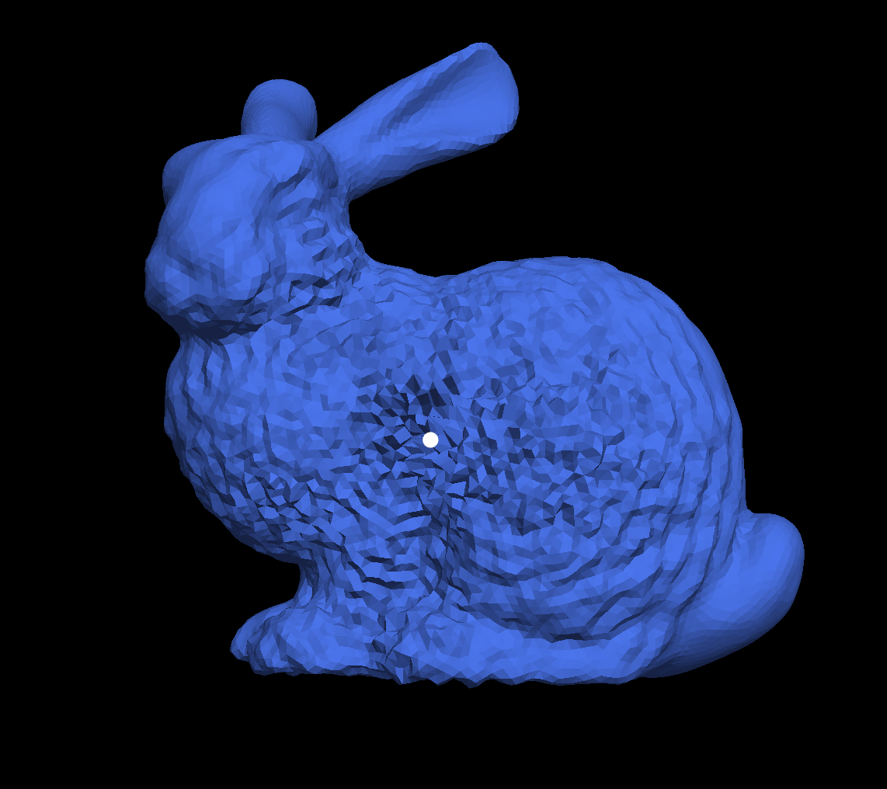

15462 Computer Graphics Assignment 5: Go Further (Water Bunny)
Karthic Palaniappan kapalani
http://462cmu.github.io/asst5_gofurther/
Project Description
I chose option C: Mesh-Based Dynamics as the topic to extend for my Assignment 5. As outlined in the initial project proposal, I modelled and implemented the 3 model linear partial differential equations : namely the laplace equation, the heat equation and the wave equation. In order to make the simulation real time or as close to real time as possible to maintain a good frame rate, I used Eigen to set up and solve the linear systems. I also added support for basic shape editing in the form of mesh smoothing by performing mean curvature flow which also used the Laplacian
Building and Running
All the code for the assignment is in the asst5 directory. This assignment builds directly off the code provided for the asst2 meshedit program so the building process for this assignment is the same. Just make a build folder, run cmake and then run make inside the build folder.
Note If you are planning to run the code locally, you might need to install Eigen. Eigen is a Linear Algebra Library that can be downloaded at this Link. Once you download and extract the zip file, simply paste the folder called Eigen that contains all the binaries into the src folder in asst5 and it should build succesfully
Program Controls
Below is a list of additional controls that I've added to support various functionalities. These are in addition to the already existing controls from asst2 but since the focus of this project is on the simulation aspect, I will not list those controls here
| Key |
Purpose |
| L |
Simulate the Laplace Equation. Given a set of initial conditions, this will result in an animated simulation of the averaging of the regions around the initial conditions |
| H |
Simulate the heat equation. By default this uses a backward euler scheme for stability. If specific initial points are specified by the user, use those, otherwise randomly pick a vertex and displace it by some amount and then solve the heat equation |
| W |
Simulate the wave equation. By default this uses a symplectic euler scheme for continuous waves. If specific initial points are specified by the user, use those, otherwise randomly pick a vertex and displace it by some amount and solve the wave equation |
| ] |
Double the time step for the integration schemes |
| [ |
Half the timestep for the integration schemes |
| 1 |
Set the Eulerian Integration Scheme to be Symplectic |
| 2 |
Set the Eulerian Integration Scheme to be Backward |
| K |
If a vertex was selected by the user, then pressing K will simply displace this vertex by a random amount in the normal direction. This is one way the user specifies the initial conditions. If successful, the vertex will turn green on future interactions (hovers or clicks). This feature is implemented primarily because I found it really hard to provide accurate height measurements at the vertices by simply dragging the vertex positions |
| M |
If not already running mesh smoothing, start running the Mean Curvature Flow to smooth the mesh, otherwise stop running mean curvature flow |
| J |
Run Taubin Smoothing. This is essentially a better smoothing technique that doesn't shrink the mesh. If already running stop Taubin Smoothing |
| - |
Shrink λ for mesh smoothing |
| + |
Grow λ for mesh smoothing |
| ( |
Shrink µ for mesh smoothing |
| ) |
Grow µ for mesh smoothing |
| > |
Double the scale for the displacements used when pressing K. Essentially allow a much bigger range of random displacements |
| < |
Half the scale for the displacements used when pressing K. Essentially Allow for a much smaller range of random displacements |
| Mouse Controls |
You can select a vertex and drag it around and this will set the height of the vertex to be the projection of difference between its position and the original position along that vertex's normal. |
Features Implemented and Design decisions
In this section I will describe the design decisions that I made and the features that I implemented in detail. It is essentially a roadmap of the progress and some images of results
Modelling the 3 Model PDE's
As a first step I started by discretizing the Laplacian. On a grid mesh it is defined as a linear combination of some weights and similarly on triangle meshes as well, the Laplacian is defined to be a linear combination of the cotangent weights. There is a choice in the weights we can choose here. Some papers describe a simple umbrella operator that weighs all neighbors equally as 1/degree of the vertex under consideration but the cotangent weights account for the shape of the mesh as well.
Once I discretized the Laplacian, I first implemented an iterative version that solved the Laplacian by first calculating the averages in a small neighborhood and then propogating it out to all of its neighbors. In order to animate this process to make it feel like a simulation I added a height map to the mesh that is just a big vector of heights of all the vertices in the mesh.
Improving Efficiency with Eigen
After verifying that the Jacobi (iterative) method produced the right results, I speeded up the process by modelling the process of taking the Laplacian of the mesh as a simple Matrix Multiplication and in order to do so I used a Sparse Matrix. The reason why I chose a Sparse Matrix is because most of the vertices have a much smaller number of neighbors than the number of vertices in the mesh which would result in a lot of zeros in every row. The Laplacian Matrix had the following closed form
L(i,j) = -1 if i == j
L(i,j) = 0 if i and j are NOT neighbors (they DO NOT share any edges)
L(i,j) = w(i,j) if i and j are neighbors, where w(i,j) is the cotangent weight given by the sum of the cotangent of the 2 angles across the halfedge divided by 2
Once I modelled it as Linear System, I could now use Eigen's solvers to vastly improve performance. This also allowed me to implement the part of the project that allowed the user to select the integration scheme since all that changed was that we had to solve a different linear equation. I did not add support for the forward Eulerian scheme because it is inherently unstable unless under very special conditions. The currently supported Eulerian Schemes are backward and symplectic, but Forward Euler is easy to extend.
Animating the solutions
There is one aspect to the animating the solutions that I glossed over when previously doing the animations and it has to do with the normals. Even if the positions we send to render the mesh are correct the face's normals also have to be adjusted to adjust for the new positions of the vertices. In my implementation I do this by having 2 fields in each vertex called the originalposition and originalnormal and every time I want to display a frame of the mesh when modelling the 3 basic linear equations all I had to do was set the position field of the vertex (the one that would end up being drawn) to its original position(that doesn't change unless the mesh deforms) + its height (as given by the height map) * original_normal. This adjustment made sure there were no holes when the mesh grew and shrunk and this made the animation smoother.
Results of simulating the 3 basic equations on different meshes
Waves Propogating Out on Bunny. Notice the circular patterns around initial disturbance point much like dropping a pebble into a pond

Waves that started near the leg now reaching the face of the bunny

Laplace Equation on Quadball (Essentially average out the initial displacement across all the neighbors)

Intermediate Step in Heat Equation on Quadball. Notice the heat distributing out into the rest of the neighborhood

Solving the Laplace Equation
Solving the Laplace equation was complicated by the fact that we were trying to solve a linear system Lu = 0 which always had the trivial solution given no initial conditions and this was the solution Eigen kept giving me (which obviously wasn't desirable). To solve this problem I set up the system as a linear least squares problem and turned it into an overconstrained system that accounted for the initial conditions by adding a row of the identity matrix at the bottom of the Laplacian matrix. However this made the system non-square and only the QR solver from the Eigen Library could solve this and this was rather slow, but the equivalent square system L^T x L x u = L^T x b
when solved using Cholesky factorization resulted in an unstable solution. Therefore I ended up solving the Laplace equation iteratively as this was fast enough for the purposes of the simple equation
Adding user support for specifying scale and time steps
In order to make the application more interactive I added several features to support user interaction. The user is now able to specify eulerian schemes and adjust the time steps used in the integration. Upto this point I was using a random displacement at some vertex in the mesh, but I now added support for the user to specify where he wants the displacement to occur. There are 2 ways currently supported : Click on a vertex and hit K and verify that the vertex is turned green and when starting a simulation, these are used as the initial conditions. The user can also drag vertices around to specify displacements, but I found this to be rather difficult to get good displacements perhaps due to the way I implemented the height calculation (project a vector from the old position to the new position onto the normal at that vertex), yet this functionality is available if the user wants to use it. This was also the time when I implemented the minor changes to UI such as coloring the mesh a shade of blue very close to water, cleaning up the drawing of the halfedges, the HUD bar or the edges since we don't use those anymore, etc.
This also means that the user can now specify mutliple initial conditions and watch some very interesting patterns such as destructive and constructive interference with waves!
Also if you're tired of waiting, you can increase the time step for just a bit and then go back to a lower time step. Just be sure not to increase the time step too much, otherwise the animation will blow up!
- A selected Vertex in the mesh shaded green

Mesh Smoothing using Mean Curvature Flow
The last part of this project involved extending the Laplacian operator to smooth the mesh. Uptill this point, I was using the height as the scalar function that I was considering the Laplcian of, but now I actually use the positions of the vertices in the mesh itself as the scalar function and run the Laplacian over them. I found that the forward Euler scheme produces pretty stable results given some its stability condition |λdt| ≤ 1. However it might produce ripples at the edges. The basic steps for the mean curvature flow were as follows :
- Compute new cotangent weights and the Laplacian based on current vertex positions
- Multiply laplacian by a |V| x 3 matrix containing the X,Y,Z coordinates of all vertices in the mesh
- Solve the differential equation using whichever Eulerian scheme you want.
- Set the positions of all vertices in the mesh to be the new positions
- Repeat
Taubin Smoothing
I also implemented Taubin smoothing that preserves mesh quality much better than the standard Laplacian Smoothing. The essential idea with Taubin Smoothing is to shrink and grow the mesh each time rather than just shrink it. To accomodate for this, there are also grow and shrink factors for the mesh λ and µ
Results of Mesh Smoothing
Stanford Bunny
Peter
Original Peter

Slightly Smoothed Peter

Very Smooth Peter

Very Smotth Peter With sharp points as artifacts clearly visible

Taubin Smoothing of the Bunny Mesh. Notice how there are still some sharp points, but even after a long time, the mesh size is still the same

Further Improvements
- At present I use a simple GL_SMOOTH shading technique, but as visible from the meshes, this sort of gives away the fact that the simulation is just that (a simulation) because the lighting is somewhat unrealistic. If I had more time I would have liked to implement a phong shader for realistic shading and maybe render the mesh with a water texture map for even more realisitc visualization.
Final Remarks
Overall I had a lot of fun working on this assignment. The freedom in the design space was interesting to work with and it was quite amazing to realize how important the Laplacian is in Computer Graphics and understand the math behind discretizing continuous operations over meshes. All the features I implemented in this assignment and a huge number more are all simple modifications to a differential equation involving the Laplacian. Professor Crane was certainly not joking when he said if you could learn one thing about PDE's in graphics learn the Laplacian.